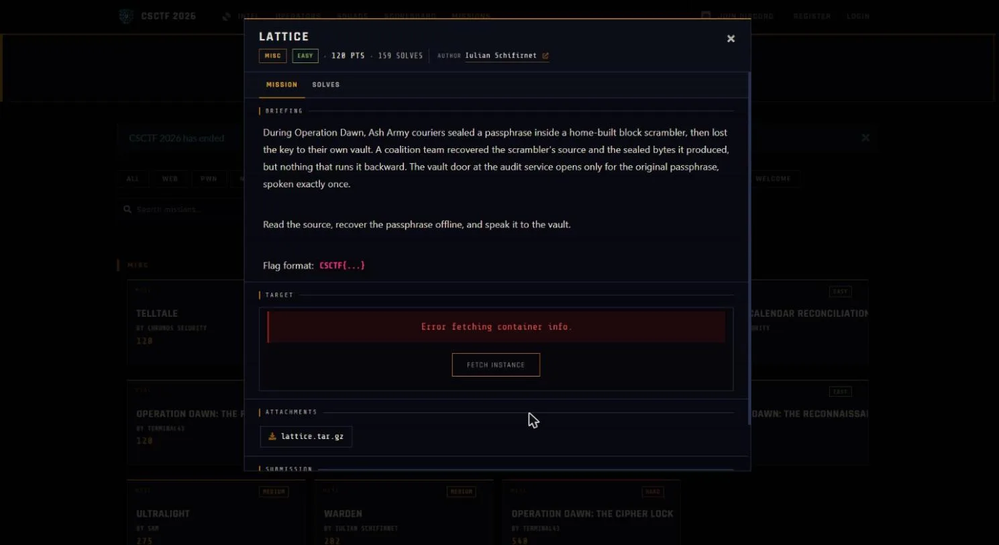

01Start point: read the source, every step reverses
- What I found: the cipher uses 8-byte blocks, 16 rounds, ECB, big-endian, PKCS#7 padding. The S-box is a Fisher-Yates permutation of 0..255 driven by a 32-bit LCG (mult 0x19660D, add 0x3C6EF35F, seed 0x1A2B3C4D). The round keys are 16x8 bytes from the same LCG family (seed 0xCAFEB0BA). Per round r: even rounds ADD the round key (mod 256), odd rounds XOR it, then every byte goes through the S-box, then the whole 64-bit block rotates left by (7*r + 11) % 63 + 1.
- Thinking: each piece has a clean inverse. Add-key undoes with subtract-key, xor-key is self-inverse, the S-box is a permutation so I can build INV[SBOX[i]] = i, and rotl64 undoes with rotr64. Nothing depends on a hidden key, because the LCG seeds and constants are in the source, so the S-box and round keys can be rebuilt byte for byte offline.
- Result: the whole cipher is invertible from public material.

02Pivot: build the inverse block
- What I did: for r from 15 down to 0 I undo the forward order in reverse. First rotate right by rot_amount(r), then substitute each byte through INV_SBOX, then if r is even subtract rk[r] mod 256, otherwise XOR with rk[r].
- Thinking: undoing in the reverse order of the forward steps is what makes the rounds cancel, so rotate first, then S-box, then the key step.
- Result: TARGET is 48 bytes, which is 6 ECB blocks. I decrypt each block, concatenate, and strip the PKCS#7 padding (last byte is the pad length).
03Result: recover and verify
- What I found: decrypting TARGET gives the passphrase unl0ck-th3-l4tt1ce-pre1mage-3f9a7c2e1b8d4a60 followed by four bytes of 0x04, which is valid PKCS#7.
- Thinking: the handout ships a checker, so I used it to confirm before touching the live service.
- Result: python3 lattice.py with that passphrase prints "match".
04Exploit: speak it to the vault
- What I did: connected with a socket to w03.ctf.chronos-security.ro port 34097 and sent the passphrase once at the secret prompt.
- Result: the vault answered "The lattice yields: CSCTF{GbXMJr6N5TnzluJZOtZuL2id}".